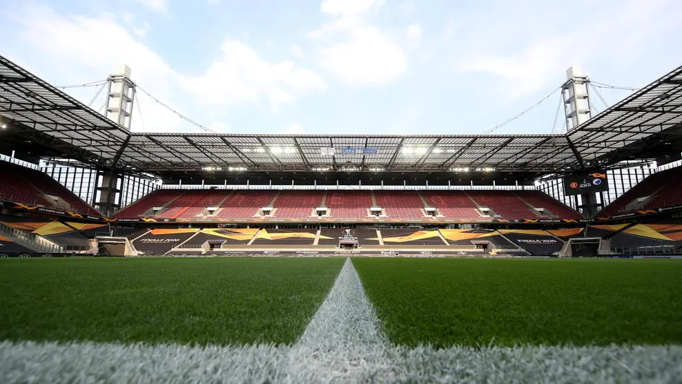
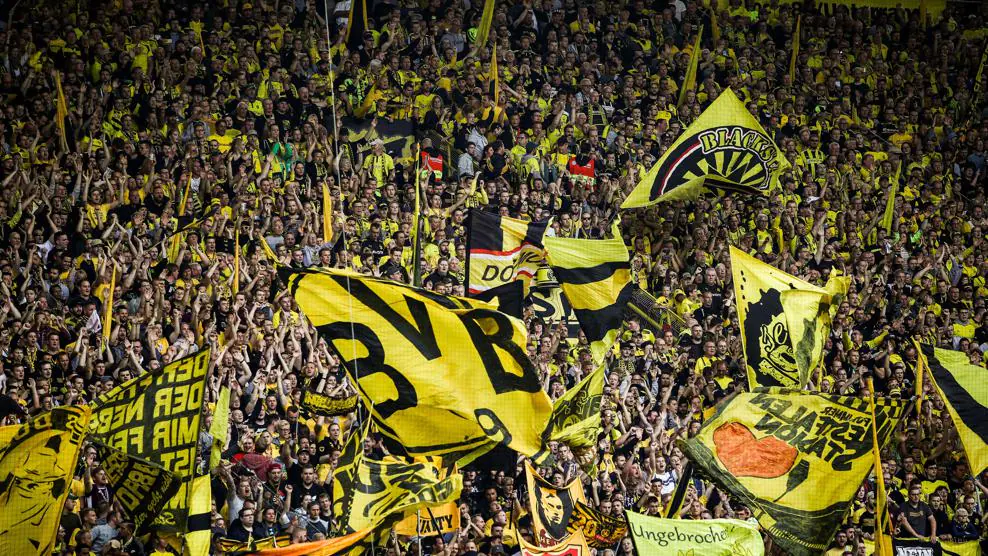

Tiis page will tell you all of the stadiums being used for the euros and the capacity.
Olympiastadion Berlin

Capacity:71,000 Home team: Hertha berlin
Cologne stadium
Capacity:43,000 Home team:1.Fc koln
BVB stadion Dortmund
Capacity:62,000 Home team: Borussia Dortmund
Dusseldorf Arena

Capacity:47,000 Home team: Fortuna Dusseldorf
Frankfurt arena

Capacity:47,000 Home team: Eintracht Frankfurt
Arena AufSchalke

Capacity:50,000 Home team: Schalke
Volksparkstadion Hamburg

Capacity:49,000 Home team: Hamburg SV
Leipzig Stadium

Capacity: 40,000 Home team: RB leipzig
Munich football arena

Capacity:66,000 Home team: Bayern Munchen
Stuttgart arena

Capacity:51,000 Home team Vfb Stuttgart
These are all of the stadiums that will host the 2024 euros fixtures.